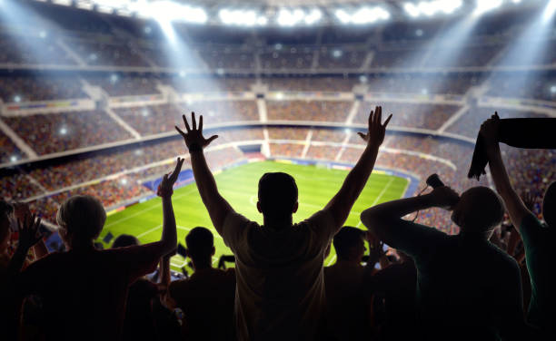

About Sports Central
Your Premier Source for Sports Updates
Who We Are
Sports Central is your go-to destination for the latest in sports news, events, and highlights. From the NFL Draft to March Madness and NBA showdowns, we keep you connected to the action with timely, accurate, and engaging content.
Our team is a dedicated group of sports enthusiasts and writers who live and breathe the game. We work tirelessly to bring you breaking news, expert analysis, and stories that capture the heart of sports.
We stand for accuracy in delivering reliable, fact-checked information, passion in celebrating the excitement of sports, and community in connecting fans with the moments that matter most.